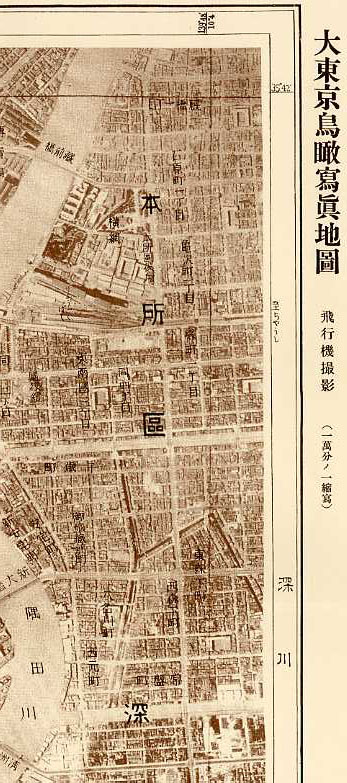
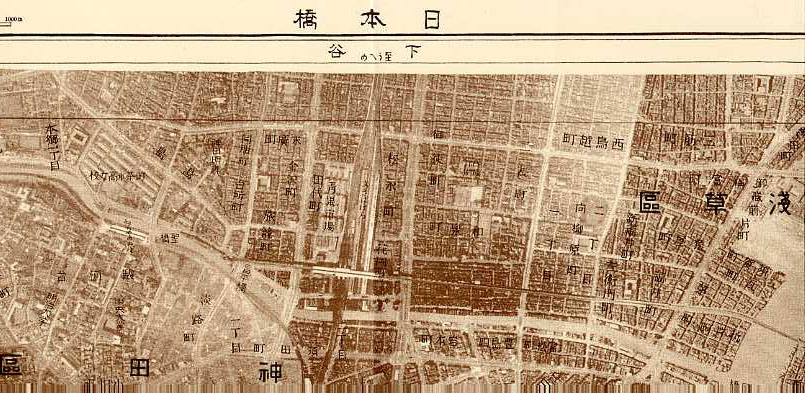

|
「地図」Vol.42 No.4添付地図 “MAP”Vol.43 No.2 Attached Map 昭和８年刊行 大東京鳥瞰写真地図『日本橋』 Duplicate Figure of the 1933 Publication Tokyo Aerial Photo Map “Nihonbashi”
複製刊行：財団法人日本地図センター 報告・添付地図解説 ：清水靖夫・青木宏人・今井健三・今尾恵介・金窪敏知・齊藤忠光・正井泰夫 2004．昭和８年刊行「大東京鳥瞰写真地図」（日本橋図）の複製図について．地図 Vol.42 No.4 ： 11-16． Yasuo SHIMIZU, Hiroto AOKI, Kenzo IMAI, Keisuke IMAO, Toshitomo KANAKUBO, Tadamitsu SAITO and Yasuo MASAI 2004． About the Duplicate Figure of the 1933 Publication “Tokyo Aerial Photo Map”(Nihonbashi Aerial photo Map) ． MAP Vol.42 No.4 ： 11-16．
今号の添付地図は、昭和８年博文館から刊行された「大東京鳥瞰写真地図」を、平成１６年７月(発売８月１０日)日本国際地図学会の「複製刊行編集委員会」(編集委員長 清水靖夫)による編集で、財団法人日本地図センターから刊行されたものの一部を、財団法人日本地図センターのご厚意で複製したものです。この写真地図は当時の1万分1地形図の図郭ごとに空中写真をモザイクしたものが1図で、鉄道、駅名、主要地名などを挿入して印刷し、現在の東京２３区のほぼ全域を４８図で網羅してあり、昭和初期の社会情勢が読み取れる首都東京の歴史的資料として、当時の景観・環境を知る上で極めて重要な歴史的、文化的資料となっています。詳しい解説は、「地図」Vol.42 No.4に掲載の【報告・添付地図解説】をご覧下さい。
このページに掲載した地図を、許可なく複製・利用することを禁止します。 |
 |
|  | |